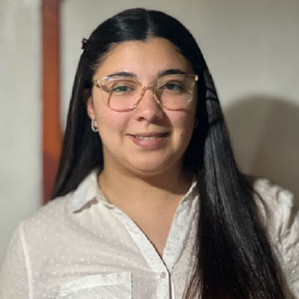
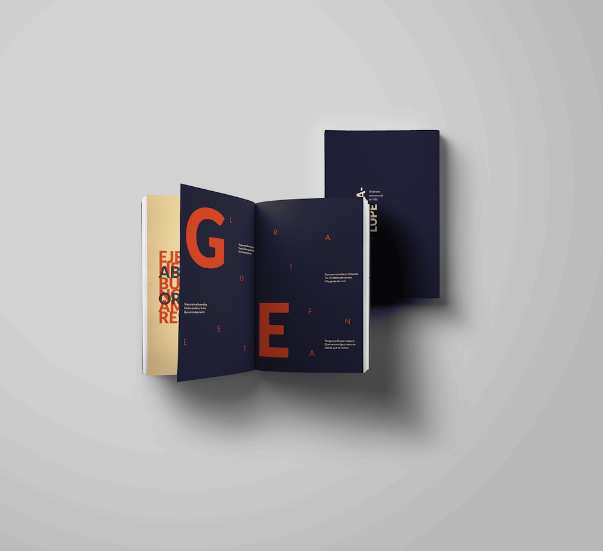

Vital Water
Analista Back Office
Junio 2023 - Actualidad
- Gestión y seguimiento de consultas, pedidos y clientes.
- Manejo de CRM.
- Coordinación con diferentes áreas.
Estudiante avanzada de Diseño y Comunicación Visual
Email: lourdesjulietatevez@gmail.com

Soy estudiante avanzada de Diseño y Comunicación Visual, con interés en el diseño gráfico, la comunicación y el desarrollo de identidades visuales. Me considero una persona creativa, responsable y organizada, con ganas de seguir aprendiendo y desarrollándome profesionalmente.
Analista Back Office
Junio 2023 - Actualidad
Licenciatura en Diseño y Comunicación Visual
2019 - Actualidad

Rediseño de tapa e interior de libros.
Diseño de revista infográfica sobre la menstruación.

Diseño de dispositivo especial conmemorativo.